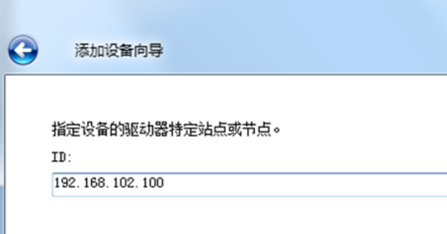

第一步：配置Kepserver（用于工控机与PLC的连接）
（1）打开Kepserver进入界面如下：点击选择“连接性”，右键“新建通道”，随后在下拉选项中选择“Allen-Bradley Micro800 Ethenet”点击下一步。
（2）在“添加通道向导”界面上，通道名称需填写“PLC”；下一步默认设置，无需更改。
（3）到选择网络配置时，在下拉框中选择连接PLC控制器的网口，其网卡的IP地址为“192.168.102.200/255.255.255.0”，确认后下一步默认，直至完成通道建立。

（4）通道建立完成后，“单击添加设备”对象名称应为该机型名称，例XS、XM等

（5）下一步指定PLC的ID，即IP地址为：192.168.102.100，后续默认设置无需更改，直至添加设备完成

以上设置完成后，工控机和PLC已经建立连接，此时重新测试软件OPC是否能连接成功
第二步：上位机软件安装
默认程序路劲为D：\Meyerxraysystem，相关驱动和工具在该目录下Driver&Tools中
第三步：输入法安装
默认无需安装，系统已经配置
第四步：触摸屏驱动安装
寻找驱动路径：D:\MeyerXraySystem，相关驱动在该目录下Driver&Tools中。
1、触摸屏驱动安装：
在Driver&Tools目录中文件eGalaxTouch_5.11.0.9126内点击setup.exe运行安装。
运行安装程序后，一直点击Next，当出现如下界面时取消勾选“InstaLLRS232 interface driver”，不安装RS232驱动，继续一路点击Next；并等待程序安装USB驱动。


研华触摸屏的USB驱动安装完成后，会弹出对话框，点击“是”立即进行四点校正。
安装屏幕提示，用手指点触红色靶标，进行屏幕四点校正。

以上完成后，双击系统托盘eGalaxTouch的图标，打开触摸屏设置，取消“从系统喇叭发声”，否则在开启声音的情况下会导致死屏（重要）。

第五步：采集卡驱动安装（选装EPIX)
点击“我的电脑”点击“管理”，在弹出对话框中点击左侧“设备管理”，随后在右侧找个“其他设备”-“多媒体视频控制器”，该未知设备就是采集卡。点击“更新驱动程序软件”。

随后选择“浏览计算机以驱动程序软件”。
搜索路径定位到“D：\MeyerXRaySystem\Driver&Tools\EPIX_V3.8_Driver\Win7”。

其次点击“设置”进入“系统设置”界面，选择“图像保存方式”和“报警设置”如下图

“始终信任来自EPIX，Inc的软件”，点击“安装”。完成后即可在设备管理器中找到采集卡。


第五步：采集卡驱动安装（选装Dalsa)
一、32位操作系统解决方法
第一步先分别安装下图两个文件夹里的exe。
在哪里下载？（https://meyerxray.github.io/）请进入X光产品线技术支持网站软件驱动中可以直接下载。
第二步关闭下图中的服务。
第三步更新插件。

（1）点击“开始”—“所有程序”，找到并打开“Fireware update
（2）点击“Manual”

（3）点击“tart update”
二、64位操作系统解决方法
按下图顺序依次安装如下文件
在哪里下载？（https://meyerxray.github.io/）请进入X光产品线技术支持网站软件驱动中可以直接下载。
安装方式：双击打开如下图“exe”
关闭服务
打开“控制面板”—“管理工具”，找到“系统配置”后点击“启动”，取消勾选“Device Manager”，后点击“确定”。

更新插件
此操作同32位操作系统